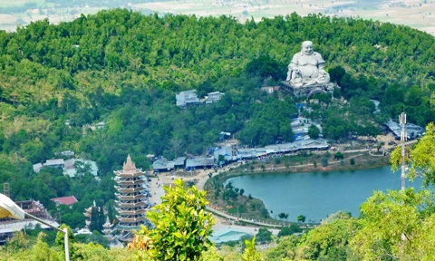
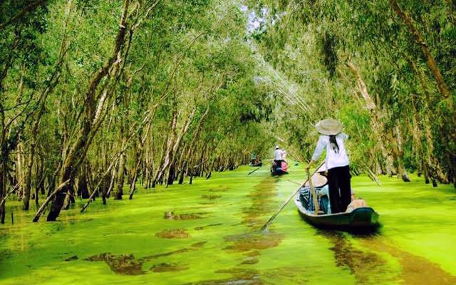

Danh lam – thắng cảnh
Núi – rừng – sông nước
Chùa chiền – lễ hội
Núi Cấm là ngọn núi cao nhất miền Tây Nam Bộ, thuộc huyện Tịnh Biên, tỉnh An Giang. Nơi đây có khí hậu mát mẻ quanh năm, phong cảnh thiên nhiên hùng vĩ và nhiều công trình tâm linh nổi tiếng, thu hút đông đảo du khách.
Rừng Tràm Trà Sư là khu du lịch sinh thái tiêu biểu của An Giang, nổi tiếng với hệ sinh thái rừng ngập nước phong phú. Du khách có thể đi xuồng len lỏi giữa rừng tràm và ngắm nhìn nhiều loài chim quý hiếm.
Miếu Bà Chúa Xứ là điểm du lịch tâm linh nổi tiếng bậc nhất miền Tây. Hằng năm, lễ hội Vía Bà thu hút hàng triệu lượt khách đến hành hương, cầu bình an và may mắn.

Chợ nổi Long Xuyên mang đậm nét sinh hoạt văn hóa sông nước miền Tây. Đây là nơi buôn bán nông sản trên sông, giúp du khách hiểu hơn về đời sống sinh hoạt của người dân địa phương.